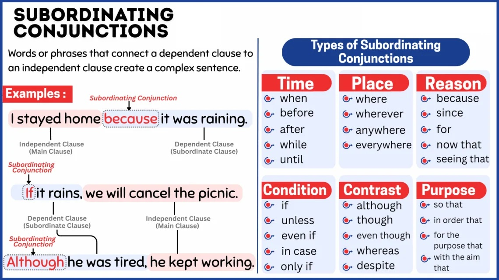
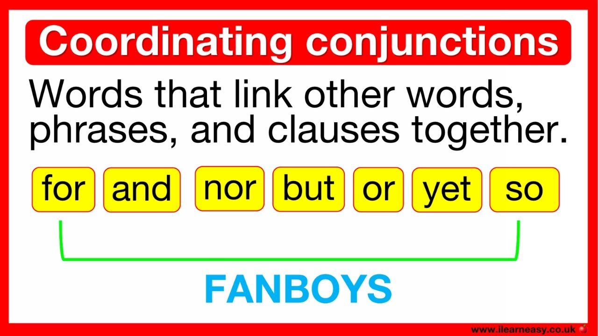
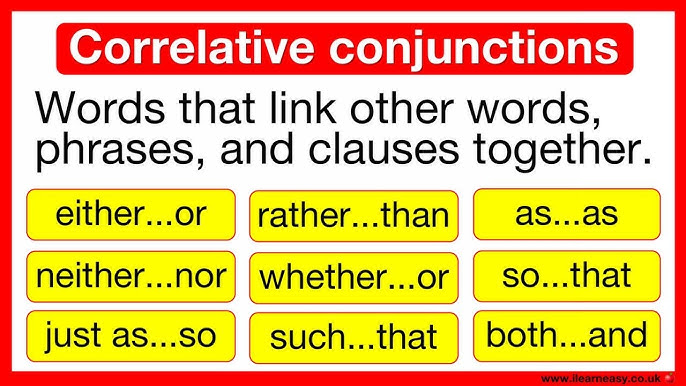

QUIZ (2.0) — Conjunctions & Linking Words
Questions in English • Feedback & short explanations in Portuguese




Question 1 /
Score: 0
Loading...
Quick Theory & Quick Vocab (EN / PT)
Tap to expand / Toque para abrir
Tap to expand / Toque para abrir
Quick Theory — Conjunctions
Coordinating (FANBOYS): for, and, nor, but, or, yet, so — connect equal elements.
Subordinating: because, although, if, when, while, since — connect dependent to independent clauses.
Correlative: either...or, neither...nor, not only...but also — paired conjunctions.
Quick Vocab — Linking Words
- However — contrast (formal)
- Therefore / Consequently / As a result — result/consequence
- Although / In spite of / Despite — concession/contrast
- Moreover / Furthermore — addition (formal)
- On the other hand — alternative viewpoint